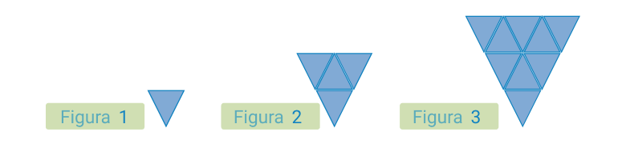
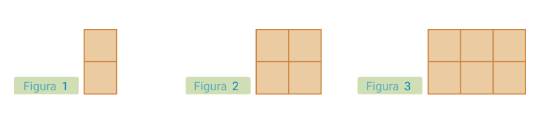
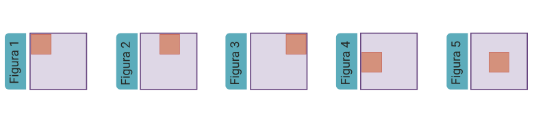
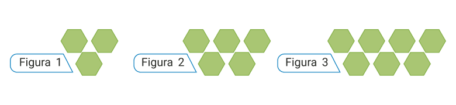
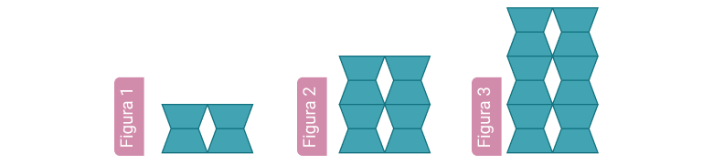
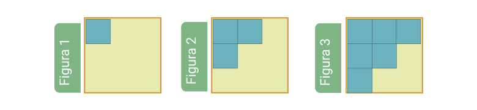

La cantidad de triángulos que debe de tener la figura 4 es:
{{option.text}}
La cantidad de triángulos que debe de tener la figura 5 es:
{{option.text}}
La figura
{{option.text}}
tendría 49 triángulos.

La cantidad de cuadrados que tendría la figura 5 sería:
{{option.text}}
La cantidad de cuadrados que tendría la figura 6 sería:
{{option.text}}

¿Cómo quedaría la figura 7?
¿Cómo quedaría la figura 9?

¿Cuántos hexágonos tendrá la figura 7?
{{option.text}}
¿Cuántos hexágonos tendrá la figura 9?
{{option.text}}

¿Cuántos trapecios tendrá la figura 5?
{{option.text}}
¿De cuántos trapecios es la constante?
{{option.text}}

¿Cómo será a figura 4?
¿Cómo será la figura 5?